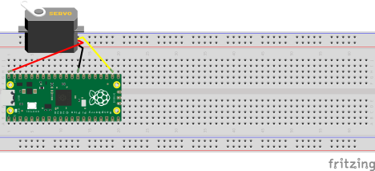

2.2.3. Continuous Servo Control#
Materials#
USB cable
Breadboard
Raspberry Pi Pico
FS90R micro servo
Kit Wires
Objective#
We will use PWM to drive a continuous servo motor, which requires PWM at specific frequencies and ranges of duty cycles to function.
Step 1: Circuit Setup#
First, read the documentation of the FS90R here. Take note of the voltage and frequency the servo operates at. The breadboard setup is identical to the one for the MG90S.
Connect the VCC wire to pico pin 40, which is labeled as VBUS. This pin can provide the necessary voltage to drive the servo without causing damage to the pico.
{kind=link}
Then connect the GND wire to a GND pin or terminal.
Then, pick a GPIO pin to connect the to the PWM input wire. This is the GPIO we will use to actually control the servo. Connect them with a kit wire directly.
Once those three connections are made you are ready to code.

Step 2: Code Setup#
Open main.py and import the required libraries:
from machine import Pin, PWM
from utime import sleep
Set up PWM on the GPIO pin you chose. Make sure to replace the XX in both lines.
servo = PWM(Pin(XX))
servo.freq(XX)
Set a position by choosing a duty cycle. Again, the specific cycles the servo works with are mentioned in the servo documentation.. Find T_period and T_on values from the documentation, and input them to the formula (2.1), where T_period is (2.2) .
T_on = (XX)
T_period = (XX)
duty_value = int((T_on / T_period) * 65535)
servo.duty_u16(duty_value)
Keep the program running to see the servo continuously turn! Notice how this behavior is different from the MG90S servo.
while True:
sleep(1)
Step 3 - Running the program#
Run the completed main.py file.
What duty cycle causes the servo to turn clockwise? What about counter-clockwise?
How do you stop the servo?
How does changing the value of the duty cycle change the speed of the servo?